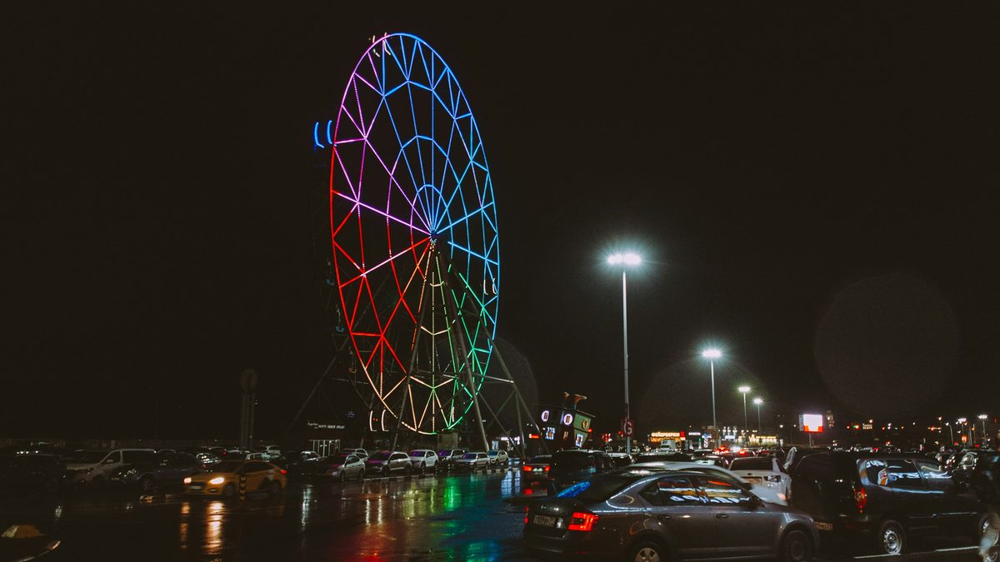

Why small and midsize amusement parks don't need to buy a shuttle fleet.
Everything at a park is a permanent purchase made against a seasonal calendar — which is exactly why so many independent parks have no transportation layer at all. The overflow lot, the campground, the four Halloween weekends: circulation is the one thing to rent, not own.
In April 2026, Lakemont Park in Altoona, Pennsylvania opened for its season with free grounds admission, four batting cages, two mini-golf courses, and a new live music series. What it did not open with was rides. The park's amusement rides have been out of operation since 2024, and the reasons given were declining attendance and high insurance costs. (WTAJ)
Lakemont is home to Leap-The-Dips, the oldest surviving roller coaster in the world. It is a National Historic Landmark. And the economics of running it stopped working.
This is the pressure every independent park operator is under right now. Jakob Wahl, President and CEO of IAAPA, put it plainly when discussing tariff and inflation impacts on the industry: the added costs ripple through construction materials, ride components, food and beverage, and merchandise, and "smaller operators are especially vulnerable, often forced to decide whether to absorb the costs or pass them on to guests." (CarnivalWarehouse / IAAPA Expo 2025)
Everything at a park is a permanent purchase made against a seasonal calendar. A ride is bought, installed, inspected, insured, and maintained year-round — and earns for maybe 120 days. That math is hard enough on attractions, which are the reason people come. It is much harder to justify on infrastructure that nobody buys a ticket for.
Which is exactly why so many parks have no real transportation layer at all.
The gap between the parking lot and the midway
Guests at large parks walk 15,000 to 20,000 steps in a day — roughly 7 to 10 miles, according to orthopedic practices that treat the resulting injuries every summer. That number gets cited constantly about the Orlando resorts, and operators of 20-acre parks tend to wave it off. That's not us. You can walk our whole midway in six minutes. (Rothman Orthopaedics)
True. And irrelevant. The walking problem at a small or midsize park almost never happens inside the midway. It happens in the space around it:
- Overflow and grass lots on peak days. The main lot is a short walk. The Saturday-in-July overflow field across the road is not.
- Campgrounds. Parks with camping attached — a defining feature of the traditional American amusement grove — put guests a quarter-mile or more from the gate, in the dark, carrying tired children.
- Picnic pavilions and group areas. Group business is the lifeblood of independent parks, and pavilions are almost always sited at the edges of the property because that's where the trees and the space are. A company picnic of 200 people arrives, parks, and then walks.
- Water parks, golf courses, and second gates. Knoebels' golf course sits a half-mile off property. Beech Bend has a campground and a racetrack. Multi-asset properties create trips that nobody is currently serving.
Park design firm FORREC's planning benchmarks assume you'll need about 200 benches for every 10,000 guests in the park, roughly two percent of peak in-park attendance, because guests need somewhere to take a load off. Benches are the passive answer to the fatigue problem. Circulation is the active one. (FORREC / Theme Parks by the Numbers)
Accessibility isn't an edge case at a traditional park
The multi-generational family visit is the core product of a regional park. Grandparents come. That's the point. It's the whole reason a 1913 carousel is still earning its keep.
But a guest who can walk the midway may not be able to walk the overflow lot, and a family will make the trip decision around the least mobile person in the group. When the answer to "can Grandma do this?" is uncertain, the entire party of nine stays home.
Personal mobility devices help the guests who already own them. They do nothing for the visitor who is simply having a hard day, or eight months pregnant, or managing three kids and a cooler. ADA-compliant fixed-route transportation is a different tool than a wheelchair rental — it serves the whole party, and it serves a demographic that would appreciate the help without having to ask for it.
At a free-admission park, circulation is the revenue model
Here's the part that matters most for the parks in this segment.
A park that charges $70 at the gate has already collected most of its money before a guest takes a step. A park with free or low-cost admission has collected nothing. Every dollar arrives later, from a ride ticket, a funnel cake, a game, a souvenir, a pavilion rental. Food and beverage and retail typically account for 20 to 30 percent of a park's total revenue, and those transactions only happen while the guest is still on property and still willing to move.
That inverts the transportation question entirely.
At a gated park, a shuttle is a guest-service cost line. At a free-admission park, a shuttle is a revenue instrument. Dwell time is the whole business.
A family that heads back to the car at 4:00 because the youngest is done walking takes their evening spend with them. The same family that can catch a ride back to the campsite for an hour and return at 6:00 spends dinner money. It's the same dynamic we've written about in Friction Is Eating Your Demand — the trip a guest doesn't take is revenue that never shows up in any report, because it never happened.
The parks with the least reason to buy transportation infrastructure outright are the ones with the most to gain from having it.
The season isn't the season anymore
The other force reshaping this segment is festivalization — parks building mini-events into the shoulder months to pull attendance out of the summer window. IAAPA's Global Impact Report identifies it as a growth area, and Wahl describes it as a strategy that has evolved from seasonal into year-round. (IAAPA / State of the Global Attractions Industry)
Halloween is the clearest case. Edithann Ramey, Six Flags' chief marketing officer, has described the category as "a billion-dollar industry in the last five years." Regional parks that once closed after Labor Day now run October weekends, holiday light displays, spring festivals, and concert series. (Blooloop)
Those events have completely different circulation profiles than a normal operating day. A Halloween weekend brings a different age mix, later hours, colder weather, and often a parking overflow situation the park doesn't face in June. A holiday light event may not use the midway at all.
Buying a fleet sized for four Halloween weekends is indefensible. Not having transportation on those four weekends is a real operational and revenue cost. This is the classic case for renting rather than owning.
The same arithmetic is playing out at state and regional parks watching the Zion shuttle model — a proven system they agree with completely and can't justify buying, because the version on offer was built for five million annual visitors and bought with a $33 million federal grant.
Running a seasonal or independent park?
FlexTram offers short-term rentals, seasonal leases, multi-year leases, and turnkey transportation plans for amusement parks and attractions — sized to your calendar and your overflow lot, not to a fleet you have to store all winter.
What "scalable" actually means here
FlexTram builds proprietary 27-passenger trams with a single driver. The specifications matter less than what they let a park do:
They go where park properties actually are. Independently turning axles and the ability to operate on asphalt, dirt, grass, gravel, and sand. Traditional parks are built in groves, along lakeshores, and on hillsides. Their overflow parking is a field. A vehicle that requires paved surfaces and wide turning radii solves the problem only in the places where the problem is smallest.
They deploy in hours and store when not needed. A tram that isn't running doesn't need a building, a bay, or a maintenance calendar the park owns. This is the difference between an asset and a service.
One tram replaces a lot of small vehicles. At one Southern California client site, eight FlexTrams replaced roughly 300 golf carts — not because of the vehicles alone, but because of the operations planning around them: heat maps, schedules, and ingress and egress modeling. Parks that have accumulated a fleet of carts, gators, and a retired shuttle bus for staff and guest movement are running an unmanaged system with an unmanaged cost.
ADA compliance is standard, not an upcharge. Which means the accessibility answer and the general circulation answer are the same vehicle.
Four ways to engage, matched to how parks actually budget
This is the real argument. The vehicle isn't new. The commercial flexibility is.
Short-term rental — days to weeks. For Halloween weekends, holiday light events, a concert series, the county fair week, a corporate buyout, or a single peak Saturday when the overflow lot opens. No capital request. No board approval. It lands in the event budget where it belongs.
Seasonal lease — matched to your operating calendar. For parks that open in May and close in September. You pay for the months you run. You don't carry a vehicle through a Pennsylvania or Wisconsin winter, and you don't insure, store, or maintain it in February.
Multi-year lease. For properties where circulation is a permanent condition — a campground, a second gate, a water park across the road, a golf course down the highway. Predictable annual operating expense instead of a depreciating asset on the balance sheet.
Turnkey transportation plan. Vehicles plus the operating system: fixed routes, posted schedules, stop placement, staffing model, and a plan built around your actual attendance curve rather than a guess.
Pilot first. A couple of trams, one weekend, one route — usually the campground or the overflow lot, because that's where the pain is measurable. Two vehicles is the smallest number that produces a real headway, which is what makes guests actually use the service instead of walking anyway. If the dwell-time numbers don't move, you've spent an event-line expense and learned something.
The system, not the vehicle
None of this works as "we put a tram out there."
What makes transportation an amenity instead of a rumor is that guests can rely on it. A posted route. A published headway. A stop with a sign on it. A driver who knows the loop. Guests plan around transportation that exists on paper; they ignore transportation that might show up.
That's also what makes it monetizable. A tram running a fixed, published route past your gate all day is a branded surface with guaranteed impressions — a sponsorship inventory item most independent parks don't currently have, and one that can offset a meaningful share of the program cost. Ancillary streams like sponsorship and naming rights carry disproportionately high margins precisely because they leverage infrastructure that's already there for another reason.
The parks in this segment have survived a century by being disciplined about capital. Family ownership, deferred purchases, rides kept running for sixty years, and a refusal to spend money they don't have. That discipline is why they're still here while the venture-backed operators aren't.
Transportation shouldn't require abandoning it.
You've spent a century making the 200 feet between rides feel effortless. The half-mile before that is still on the guest.
— The FlexTram Team
Frequently asked questions
Why don't small and midsize amusement parks need to buy a shuttle fleet?
Everything at a park is a permanent purchase made against a seasonal calendar — a ride is bought, installed, inspected, insured, and maintained year-round but earns for maybe 120 days. That math is hard to justify on attractions people buy tickets for, and much harder on infrastructure nobody buys a ticket for, which is why so many parks have no real transportation layer at all. Circulation is the one part of the operation where renting or leasing matches the seasonal, event-driven reality: you pay for the Halloween weekends, the summer overflow Saturdays, or the months you actually run, without carrying a depreciating vehicle through the winter.
Where does the walking problem actually happen at a small amusement park?
Almost never inside the midway — you can walk a 20-acre midway in six minutes. The walking problem happens in the space around it: overflow and grass lots on peak days, campgrounds a quarter-mile or more from the gate, picnic pavilions and group areas sited at the edges of the property where the trees and space are, and multi-asset properties with a water park, golf course, racetrack, or second gate off the main footprint. Those are the trips nobody is currently serving, and they're where a fixed-route tram earns its keep.
Why is guest circulation a revenue driver at a free-admission park?
A park that charges $70 at the gate has collected most of its money before a guest takes a step. A free- or low-admission park has collected nothing — every dollar arrives later from a ride ticket, funnel cake, game, souvenir, or pavilion rental, and food, beverage, and retail are typically 20 to 30 percent of total revenue. Those transactions only happen while the guest is still on property and still willing to move. A family that heads to the car at 4:00 because the youngest is done walking takes their evening spend with them; a family that can catch a ride back to the campsite and return at 6:00 spends dinner money. At a free-admission park, circulation is a revenue instrument, not a guest-service cost line.
Can a tram run on grass overflow lots and campground paths?
Yes. FlexTram's 27-passenger, single-driver trams have independently turning axles and operate on asphalt, dirt, grass, gravel, and sand. Traditional parks are built in groves, along lakeshores, and on hillsides, and their overflow parking is usually a field — so a vehicle that requires paved surfaces and wide turning radii solves the problem only where the problem is smallest. Going where the park property actually is — the grass overflow lot, the campground loop, the pavilion at the tree line — is the whole point.
How does renting a tram for Halloween or seasonal events work?
FlexTram offers four commercial models matched to how parks budget: short-term rental (days to weeks, for Halloween weekends, holiday light events, a concert series, or a single peak Saturday — it lands in the event budget, no capital request); seasonal lease (matched to a May-to-September calendar, so you pay only for the months you run); multi-year lease (for permanent conditions like a campground or second gate, as a predictable operating expense instead of a depreciating asset); and a turnkey transportation plan (vehicles plus fixed routes, posted schedules, stop placement, and staffing built around your actual attendance curve). Most parks start with a pilot — two trams, one weekend, one route, usually the campground or overflow lot where the pain is measurable.
Related reading
The half-mile before the midway shouldn't require a capital request.
FlexTram offers rentals, long-term leases, and turnkey transportation plans for amusement parks, resorts, festivals, and large-footprint venues — sized to your season, your overflow lot, and your Halloween weekends. ADA service built in as standard.